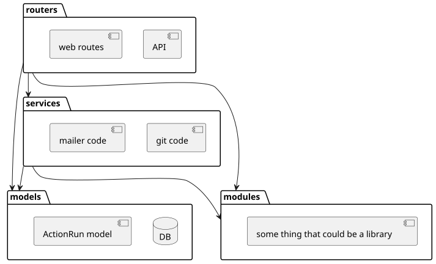
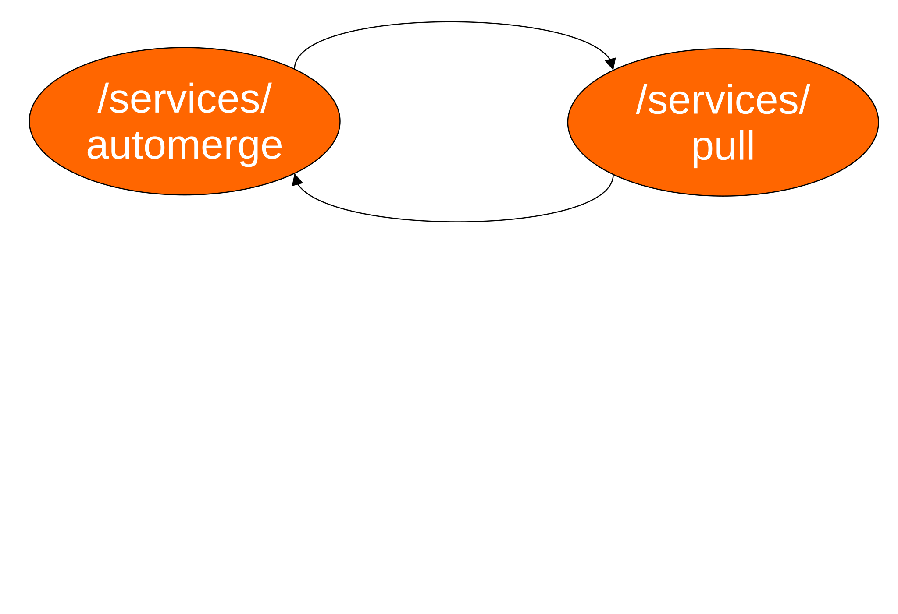
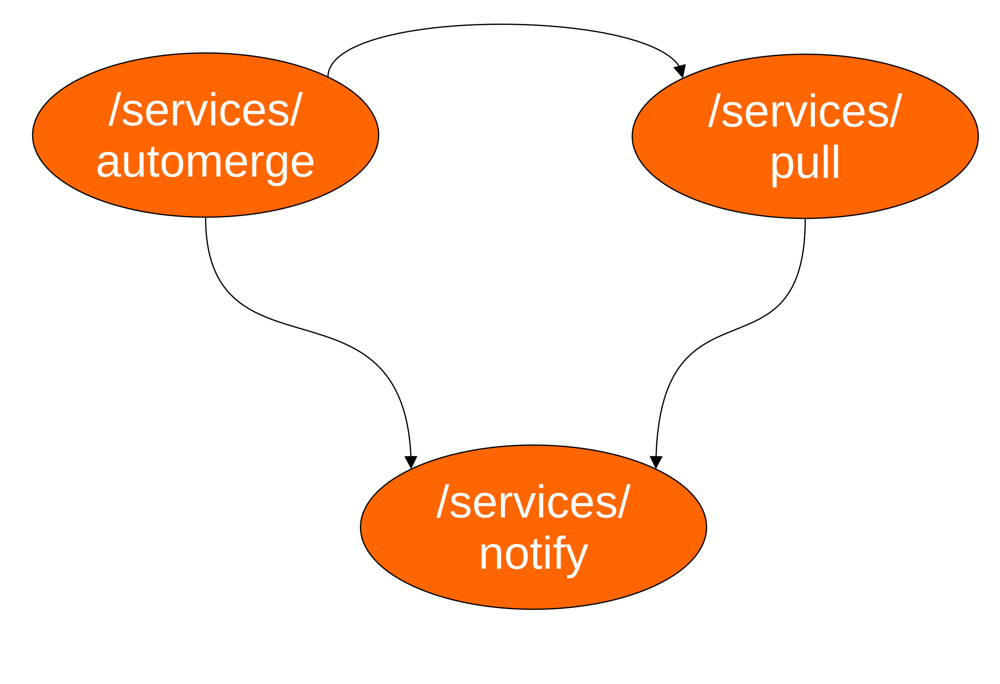
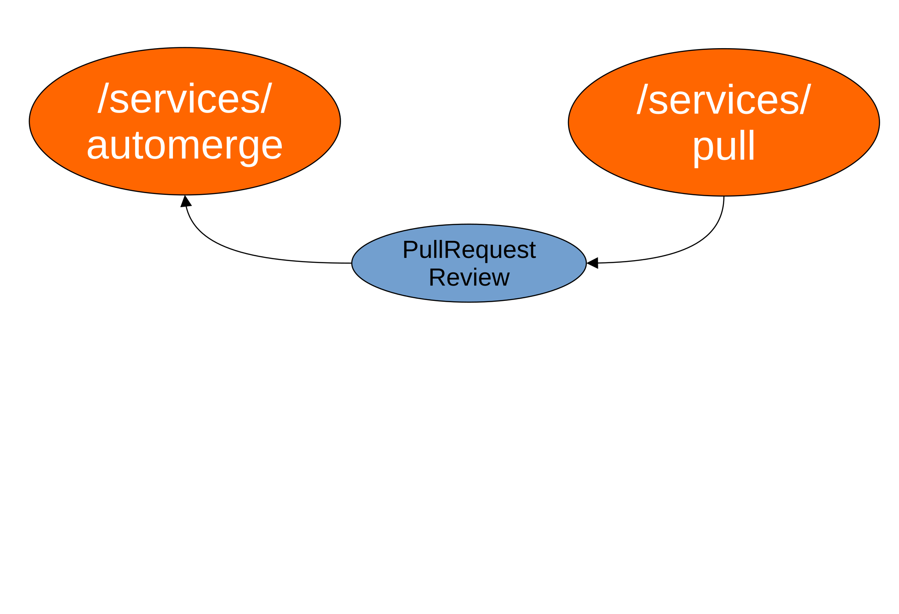

import forgejo.org/cmd"
_test.go" suffixfunc SomeFunc()" is exported but "func someFunc()" is not
.go files)/go.mod
go.mod defines a modulegithub.com/hashicorp/go-version is dependency, download from GitHubreplace/main.go
main in package main is entrypointcmd package in forgejo.org module/cmd/main.go
/modules/log/init.go

/models: database abstraction/modules: could be third-party library
/services/automerge calls/services/pull/services/pull calls/services/automerge
/services/automerge calls/services/pull/services/pull calls/services/automerge/services/notify
/services/notifyPullRequestReview topic